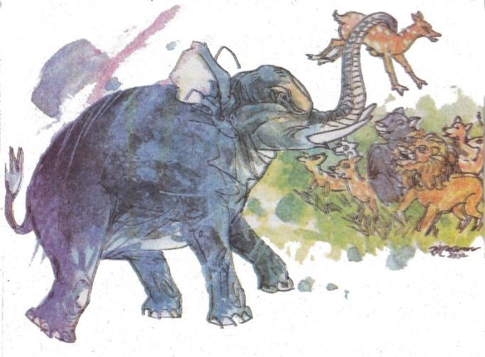

হাতি আর শেয়ালের গল্প
সে অনেক-অনেক দিন আগের কথা। চারদিকে তখন কী সুন্দর সবুজ বন, ঝোপঝাড়। আর দিগন্তে ঝুঁকে পড়া নীল আকাশের ছোঁয়া। এরকম দিনগুলোতে মানুষেরা থাকত লোকালয়ে আর পশুরা জঙ্গলে।
মানুষ তখন একটু একটু করে সভ্য হচ্ছে। কী করে সবার সঙ্গে মিলেমিশে থাকা যায়, শিখছে সেইসব কায়দাকানুন। ও-দিকে বনে বনে তখন পশুদের রাজত্ব। হাজার রকমের প্রাণী, অসংখ্য পাখ-পাখালি। বেশ শান্তিতেই কাটছিল বনের পাখি আর প্রাণীদের দিনগুলো। কিন্তু একদিন হলো কী তাড়া খেয়ে মস্ত একটা হাতি এই বনে ঢুকে পড়ল। হাতিটার সে-কী বিশাল শরীর। পাগুলো বটপাকুড় গাছের মতো মোটা। শুঁড় এতটাই লম্বা যে আকাশের গায়ে গিয়ে বুঝি ঠেকবে। তার গায়েও অসীম জোর। এই শরীর আর শক্তি নিয়েই তার যত অহংকার। মেজাজটাও দারুণ তিরিক্ষি।

তো-যেই না হাতিটার ঐ বনে ঢোকা, অমনি শুরু হয়ে গেল তোলপাড়। নতুন অতিথি এসেছে, সবাই স্বাগত জানাবার জন্য প্রস্তুত হচ্ছে। কিন্তু ঐ দুষ্টু হাতিটার সে-কী তুলকালাম কাণ্ড। খুব জোরে গলা ফাটিয়ে দিল প্রচণ্ড একটা হুঙ্কার। থরথর করে কেঁপে উঠল সমস্ত বন। গাছে গাছে পরম নিশ্চিন্তে বসেছিল পাখি, তারা ভয়ে ডানা ঝাপটাতে শুরু করল। মাটির তলায় লুকিয়ে ছিল যে ইঁদুর, গুবরে পোকার দল। তারা বুঝতে চাইল কী এমন ঘটল যে এমন করে কেঁপে উঠল মেদিনী?
হাতিটা এমন ভাব করতে শুরু করল, সেই বুঝি বনের রাজা। গুরুগম্ভীর ভারিক্কি চালের কেশর দোলানো অমিত শক্তিধর সিংহ। সেও হাতিটার কাছে আসতে ভয় পায়। হালুম বাঘ মামা সেও হাতিটার ধারে-কাছে ঘেঁষতে চায় না। বনের সবাই ভয়ে তটস্থ, শঙ্কিত। কখন জানি কী হয়!
একবার তো কী জানি কী হয়েছে। নিরীহ একটা হরিণকে শুঁড়ে জড়িয়ে ছুঁড়ে ফেলে দিল দূরে। আরেকবার ছোট্ট একট পিঁপড়ে পায়ের তলায় পিষে মেরে ফেলল। সেই থেকে বনের কোনো প্রাণী হাতিটার ছায়াও মাড়াত না। দিনে দিনে হাতিটা হয়ে উঠল আরও অহংকারী। এই নিয়ে বনের কারো মনে শান্তি নেই।
কিন্তু এভাবে কি দিন যায়? এক সন্ধ্যায় বনের সব প্রাণী এসে জড়ো হলো সিংহের গুহায়। এর একট বিহিত চাই, সাবর মুখে এক কথা। বাঘ, ভালুক, সিংহ, বানর, হরিণ, বনবিড়াল, শেয়াল সবাই শলা-পরামর্শ করতে বসল। শেষে সবাই মিলে শেয়ালের উপরেই ভার দিল।
দিন আসে, দিন যায়। একদিন শেয়াল ভয়ে ভয়ে হাজির হলো হাতির আস্তানায়। লেজ গুটিয়ে একটা সালাম দিল। বলল, আপনিই তো বনের সবচেয়ে শক্তিশালী প্রাণী। আপনিই আমাদের রাজা। ঐ দেখুন, নদীর ওপারে সবাই উদগ্রীব হয়ে বসে আসে। আপনাকে রাজা হিসেবে বরণ করে নিতে চায় সবাই।
হাতি তো শেয়ালের কথা শুনে মহা খুশি। আচ্ছা চল। নদীর পারে এসে শেয়াল বলল, এই আমি নদী সাঁতরে পার হচ্ছি। আপনিও আসুন। এই বলে শেয়াল নদীতে দিল ঝাঁপ। হাতি ভাবল, পুঁচকে শেয়াল যদি নদী পার হতে পারে, আমি পারব না কেন? সেও নদীতে নেমে পড়ল।
কিন্তু মস্ত বড় তার শরীর আর কী ভারী। হাতিটা নদীর পানিতে পা দিল। অমনি তার ভারী শরীর একটু একটু করে তলিয়ে যেতে থাকল। তলিয়ে যেতে যেতে হাতি বলল, শেয়াল ভায়া, আমাকে বাঁচাও। শেয়াল ততক্ষণে নদী পার হয়ে তীরে উঠে এসেছে। বনের সমস্ত প্রাণী তার পেছনে এসে দাঁড়াল।
১৮শেয়াল হাতিকে বলল, তোমাকে বাঁচাব আমরা? একদিন তোমার অত্যাচারে আমরা কেউ বনে শান্তিতে ঘুমাতে পারিনি। তোমাকে শাস্তি দেওয়ার জন্যেই তো নদীতে নিয়ে এসেছি। বনের যত প্রাণী ছিল, সবাই শেয়ালের কথার প্রতিধ্বনি করে সমস্বরে বলে উঠল :
ঠিক বলেছ শেয়াল ভায়া
আর দেখব না হাতির ছায়া
আমরা এখন মুক্ত স্বাধীন
নাচছি সবাই তা-ধিন তা-ধিন।
(হিতোপদেশ অবলম্বনে)
১৯অনুশীলনী
১. শব্দগুলো পাঠ থেকে খুঁজে বের করি। অর্থ বলি।
|
দিগন্ত |
অহংকার |
তিরিক্ষি |
|
তুলকালাম কাণ্ড |
হুঙ্কার |
মেদিনী |
|
তটস্থ |
শঙ্কিত |
শক্তিধর |
|
আস্তানা |
উদগ্রীব |
সমস্বরে |
২. ঘরের ভিতরের শব্দগুলো খালি জায়গায় বসিয়ে বাক্য তৈরি করি।
|
দিগন্তের |
অহংকার |
তিরিক্ষি |
তুলকালাম কাণ্ড |
|
হুঙ্কার |
মেদিনী |
তটস্থ |
শঙ্কিত |
ক. বিদ্যুৎ চমকালে [………………………………] কেঁপে ওঠে বলে মনে হতে পারে।
খ. […………………………………….] পতনের মূল।
গ. কী হয়েছে, এত […………………………………………….] হয়ে আছ কেন?
ঘ. বনের সিংহ [……………………………] দিলে মানুষের মনে ভয় জাগে।
ঙ. নিজের কলমটা খুঁজে না পেয়ে সে [……………………………………..] বাধিয়ে দিয়েছে।
চ. [………………………………….] ওপারে কী আছে কেউ জানে না।
ছ. মেজাজ [………………………………………….] বলে তার কাছে কেউ ঘেঁষতে চায় না।
জ. তুমি এত [………………………………………] কেন? কী হয়েছে?
৩. প্রশ্নগুলোর উত্তর বলি ও লিখি।
ক. অমিত শক্তিধর কাকে বলা হয়েছে?
খ. বনের পশুদের ওপর অশান্তি নেমে আসার কারণ কী?
গ. গল্পে মুক্ত স্বাধীন বলতে কী বোঝানো হয়েছে?
ঘ. শেয়াল হাতিকে শাস্তি না দিলে বনের পশুপাখিদের কী হতো ব্যাখ্যা কর।
ঙ. হাতির এই শাস্তির জন্য তার চরিত্রের কোন বিষয়গুলো দায়ী বলে তুমি মনে কর।
চ. মানুষ যখন সভ্য হচ্ছে তখন মিলেমিশে থাকার প্রয়োজনীয়তা দেখা দিল কেন?
ছ. সবাই মিলে শেয়ালকে দায়িত্ব দিল কেন?
জ. শেয়াল কীভাবে বনের পশুপাখিকে রক্ষ করলো?
ঝ. অহংকারী ও অত্যাচারীর পরিণাম শেষ পর্যন্ত কী হয় ?
২০৪. বিপরীত শব্দ জেনে নিই। খালি জায়গায় ঠিক শব্দ বসিয়ে বাক্য তৈরি করি।
|
সুন্দর |
কুৎসিত |
|
অহংকার |
নিরহঙ্কার |
|
ভয় |
সাহস |
|
স্বাধীন |
পরাধীন |
ক. আমরা [………………………………………] দেশের অধিবাসী।
খ. […………………………………………..] পতনের মূল।
গ. চেহারা নয়, আসল […………………………………..] হলো মানুষের মন।
ঘ. মনে [………………………………….] থাকলে কোন কিছু করা সম্ভব নয়।
৫. ঠিক উত্তরটিতে টিক () চিহ্ন দিই।
ক. বনের সব প্রাণী কার কাছে এসে জড়ো হলো?
১. বাঘ
২. শেয়াল
৩. হাতি
৪. সিংহ
খ. কার জন্য বনে আবার শান্তি ফিরে আসল?
১. সিংহ
২. শেয়াল
৩. ভালুক
৪. বাঘ
গ. হাতির অত্যাচার থেকে বাঁচার জন্য কেন শেয়ালকে দায়িত্ব দেয়া হলো?
১. শেয়াল সাঁতার জানে
২. শেয়াল খুব সাহসী
৩. শেয়াল বুদ্ধিমান
৪. শেয়াল হাতির বন্ধু
ঘ. হাতির করুণ পরিণতির জন্য দায়ী কোনটি?
১. হাতির অহংকার
২. হাতির লম্বা শুঁড়
৩. হাতির ভারী শরীর
৪. হাতির বোকামি
ঙ. হাতিকে বাঁচানোর জন্য কেউ এগিয়ে এলো না কেন?
১. হাতির অত্যাচারের জন্য
২. হাতি খুব বড় বলে
৩. হাতির ভয়ে
৪. হাতি সাঁতার জানে বলে
২১৬. বিপরীত শব্দ লিখি এবং তা দিয়ে একটি করে বাক্য লিখি।
|
শান্তি |
অশান্তি |
অসৎ প্রতিবেশীর কারণে তার অশান্তি লেগেই আছে। |
|
সভ্য |
[…………………] |
[…………………] |
|
ধ্বনি |
[…………………] |
[…………………] |
|
শক্তিশালী |
[…………………] |
[…………………] |
৭. নিচের শব্দগুলোর কোনটি কোন পদ লিখি।
|
দুষ্টু - |
বিশেষণ |
|
হাতি - |
[……………………..] |
|
বুদ্ধিমান - |
[……………………..] |
|
এবং - |
[……………………..] |
|
আমি - |
[……………………..] |
|
চায় - |
[……………………..] |
৮. যে কোনো একটা প্রাণী সম্পর্কে বলি এবং পাঁচটি বাক্যের একটা অনুচ্ছেদ রচনা করি।
৯. কর্ম-অনুশীলন।
একটি গল্প লেখার চেষ্টা করি। প্রথমে শিক্ষকের সহায়তায় ২/৩টি সাদা কাগজ নিই। সেগুলোকে একটি ভাঁজ করে নোটবুকের মতো তৈরি করি। এখন প্রত্যেকটি কাগজের এক পাশে নিচের দিকের অর্ধেক থেকে গল্প লেখা শুরু করি। আর উপরের অর্ধেকে নিজের খুশিমতো ছবি আঁকি। লেখা শেষে উপরে একটা কভার পৃষ্ঠা যোগ করি। সে-পৃষ্ঠায় গল্পের একটা নাম দিই ও লিখি, নিজের নাম লিখি এবং ইচ্ছেমতো ছবি আঁকি। এভাবে নিজের লেখা একটি গল্পের বই তৈরি করি।
২২